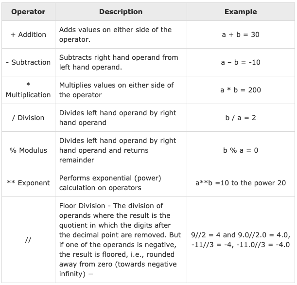
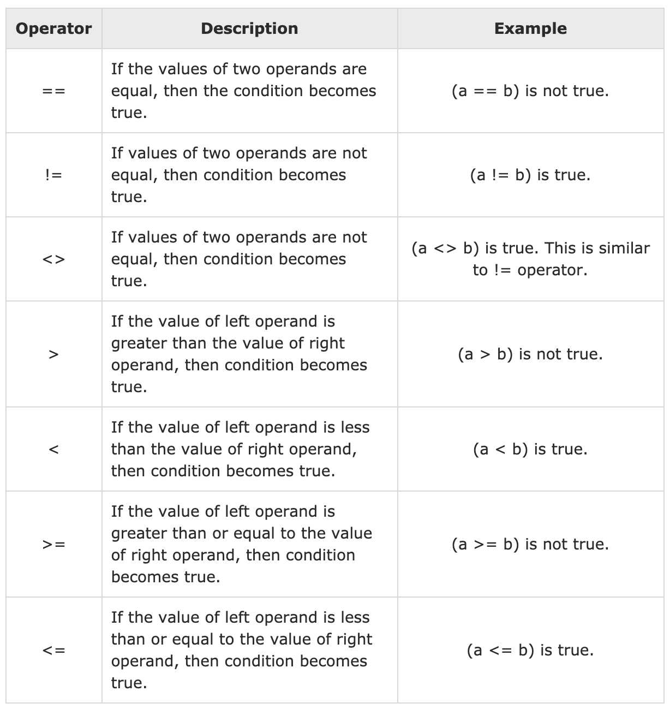
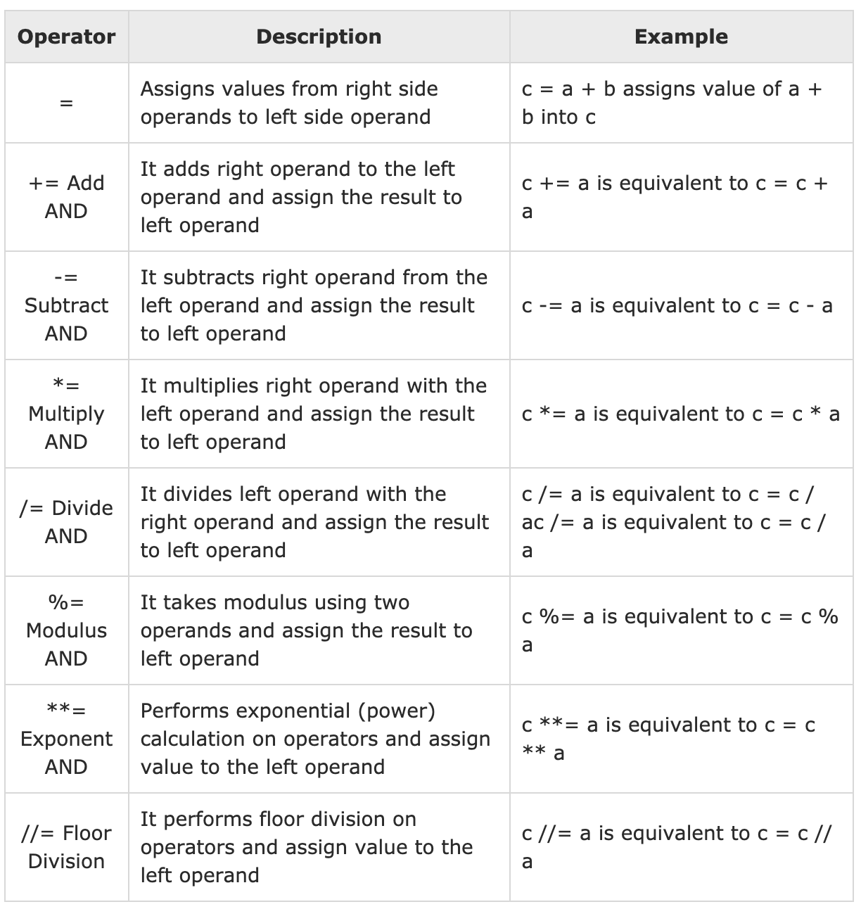
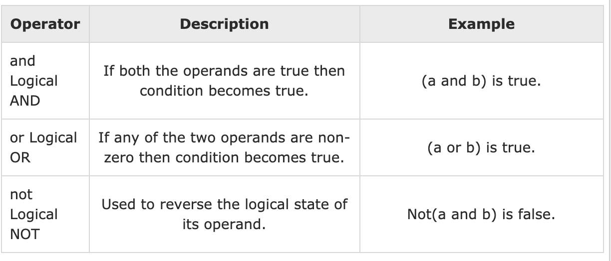
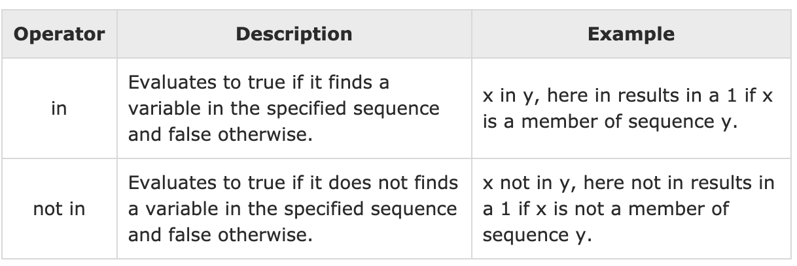
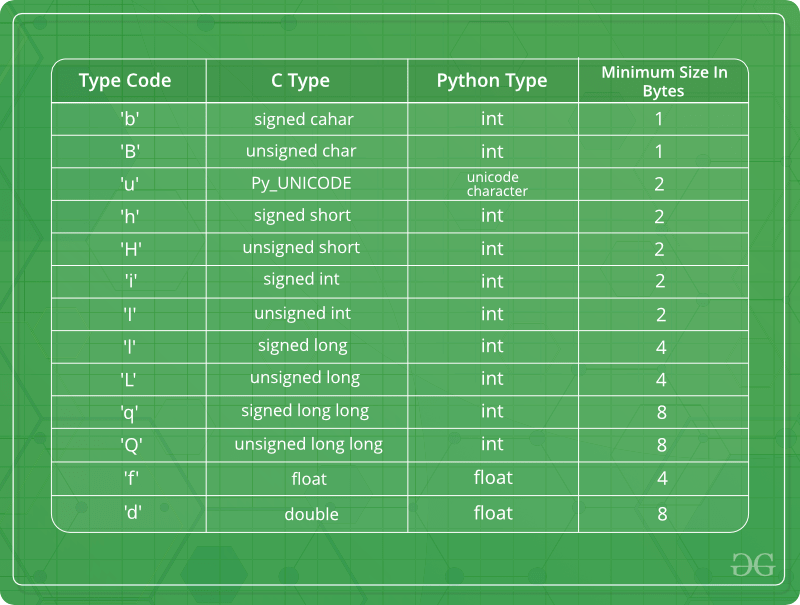
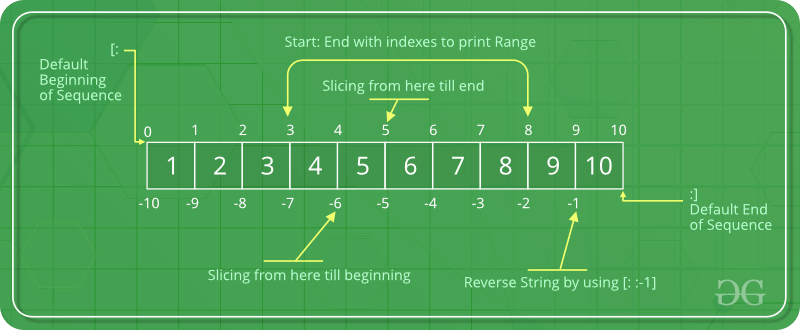

A Crash Course in Python: Part 1
Contents
A Crash Course in Python: Part 1#
Why Python?#
Python is a dynamic, interpreted (bytecode-compiled) language
There are no type declarations of variables, parameters, functions, or methods in source code
Python code short and flexible and quick to use
Python tracks the types of all values at runtime and flags code that does not make sense as it runs
Python is open source so there are no paywalls (e.g., Matlab)
There is a massive open source developer community
Numbers#
You can type an expression at it and it will write the value
25
25
Variables#
Used to store values in a human readable form
Rules for variables#
Must start with a letter
Can only contain letters and numbers
Python considers
_as a letterBest practices is for variables to be lowercase
Operators in Python#
Operators are ways to have expressions interact with one another
Mathematical Operators#
Used for mathematical operations

Addition#
5 + 5
10
Subtraction#
10 - 7
3
Division#
8 / 5
1.6
Note
division always returns a floating point number
Parenthesis#
(50 - 5 * 6) / 4
5.0
Modulus#
Modulus returns the remainder after division
29 % 3
2
Exponential#
3**9
19683
Floor Division#
29 // 3
9
Comparison Operators#
Used for comparison between expressions

Equal to#
print(10 == 10)
print(10 == 11)
True
False
Not Equal to#
print(10 != 10)
print(10 != 11)
False
True
Greater than#
print(9 > 10)
print(10 > 10)
print(11 > 10)
False
False
True
Less than#
print(9 < 10)
print(10 < 10)
print(11 < 10)
True
False
False
Greater than Equal to#
print(9 >= 10)
print(10 >= 10)
print(11 >= 10)
False
True
True
Less than Equal to#
print(9 <= 10)
print(10 <= 10)
print(11 <= 10)
True
True
False
Assignment Operators#
This allows you to assign a value to a variable

Equals#
five = 5
print(five)
5
Adds to#
five += 5
print(five)
10
Subtracts#
print(five)
five -= 5
print(five)
10
5
Multiply#
print(five)
five *= 5
print(five)
5
25
Divide#
print(five)
five /= 5
print(five)
25
5.0
Modulus#
twenty_nine = 29
print(twenty_nine)
twenty_nine %= 3
print(twenty_nine)
29
2
Exponent#
print(five)
five**5
print(five)
5.0
5.0
Floor Divide#
twenty_nine = 29
print(twenty_nine)
twenty_nine //= 3
print(twenty_nine)
29
9
Logical Operators#
Used to evaluate if a condition is met

Logical And (and)#
print(True and True)
True
print(False and False)
False
print(False and False)
False
Logical Or (or)#
print(True or True)
True
print(False or False)
False
print(False or False)
False
Logical Not (not)#
print(not (True and True))
False
print(not (True or False))
False
print(not (False and False))
True
Membership Operators#
Determines if a value is within an expression

in operator#
print("p" in "apple")
True
print("i" in "apple")
False
print("ap" in "apple")
True
print("pa" in "apple")
False
not in operator#
print("x" not in "apple")
True
print("a" not in "apple")
False
in in lists#
print("a" in ["apple", "pear", "peach"])
False
print("apple" in ["apple", "pear", "peach"])
True
Updating Expressions#
You can update an expression
x = 10
x = x + 10
print(x)
20
Data Types#
Strings#
Strings are arrays of bytes representing Unicode characters
Example 'Drexel University' or "Drexel University"
print("This is my first string")
This is my first string
Accessing characters in Strings#
Individual characters can be accessed by indexing:
Positive numbers from the front of the string (starting with 0)
Negative numbers from the back of the string (starting with -1)
Indexing is only possible with a
int
# Python Program to Access
# characters of String
String1 = "This is my second string"
print("Initial String: ")
print(String1)
Initial String:
This is my second string
# Printing First character
print("First character of String is: ")
print(String1[0])
First character of String is:
T
# Printing Last character
print("Last character of String is: ")
print(String1[-1])
Last character of String is:
g
String Slicing#
A range of characters can be accessed using the : operator
# Python Program to
# demonstrate String slicing
# Creating a String
String1 = "This is my third string"
print("Initial String: ")
print(String1)
Initial String:
This is my third string
# Printing 3rd to 12th character
print("Slicing characters from 3-12: ")
print(String1[3:12])
Slicing characters from 3-12:
s is my t
# Printing characters between
# 3rd and 2nd last character
print("Slicing characters between " + "3rd and 2nd last character: ")
print(String1[3:-2])
Slicing characters between 3rd and 2nd last character:
s is my third stri
Updating Strings#
Strings cannot be directly updated. They need to be replaced or reformed
# Python Program to Update
# character of a String
String1 = "This is my fourth string"
print("Initial String: ")
print(String1)
Initial String:
This is my fourth string
# Updating a character of the String
## As python strings are immutable, they don't support item updates directly
### there are following two ways
# 1
list1 = list(String1)
list1[2] = "2"
String2 = "".join(list1)
print("Updating character at 2nd Index: ")
print(String2)
Updating character at 2nd Index:
Th2s is my fourth string
# 2
String3 = String1[0:2] + "2" + String1[3:]
print(String3)
Th2s is my fourth string
Replacing Strings#
# Python Program to Update
# entire String
String1 = "Hello, I'm a Drexel Dragon"
print("Initial String: ")
print(String1)
Initial String:
Hello, I'm a Drexel Dragon
# Updating a String
String1 = "Welcome to Drexel"
print("Updated String: ")
print(String1)
Updated String:
Welcome to Drexel
Formatting Strings#
There are times where you want to create a string from a variable
If using Python 3, f-strings should be used
name = "Eric"
age = 74
f"Hello, {name}. You are {age}."
'Hello, Eric. You are 74.'
Number formats#
Sometimes it is nice to format numbers in different ways, there are conventions to do this.
# Formatting of Integers
String1 = f"{16:b}"
print("Binary representation of 16 is ")
print(String1)
Binary representation of 16 is
10000
# Formatting of Floats
String1 = f"{165.6458:e}"
print("Exponent representation of 165.6458 is ")
print(String1)
Exponent representation of 165.6458 is
1.656458e+02
# Rounding off Integers
String1 = f"{1/6:.2f}"
print("one-sixth is : ")
print(String1)
one-sixth is :
0.17
Lists#
Lists are dynamically sized arrays
Var = ["I'm", "a", "Drexel", "Engineer"]
print(Var)
["I'm", 'a', 'Drexel', 'Engineer']
List are powerful because they can contain data of a variety of types (e.g.,
strings,floats,ints)They are mutable, this means they can be altered after they are created
Creating a list in Python#
# Python program to demonstrate
# Creation of List
# Creating a List
List = []
print("Blank List: ")
print(List)
Blank List:
[]
# Creating a List of numbers
List = [10, 20, 14]
print("List of numbers: ")
print(List)
List of numbers:
[10, 20, 14]
# Creating a List of strings and accessing
# using index
List = ["I'm", "a", "Drexel", "Engineer"]
print("List Items: ")
print(List[0])
print(List[2])
List Items:
I'm
Drexel
Creating a list with multiple elements#
# Creating a List with
# the use of Numbers
# (Having duplicate values)
List = [1, 2, 4, 4, 3, 3, 3, 6, 5]
print("List with the use of Numbers: ")
print(List)
List with the use of Numbers:
[1, 2, 4, 4, 3, 3, 3, 6, 5]
# Creating a List with
# mixed type of values
# (Having numbers and strings)
List = [1, 2, "Drexel", 4, "For", 6, "Engineers"]
print("List with the use of Mixed Values: ")
print(List)
List with the use of Mixed Values:
[1, 2, 'Drexel', 4, 'For', 6, 'Engineers']
Accessing Elements of a List#
Use the index operator
[ ]to access an item in a listThe index must be an integer
Nested lists are accessed using nested indexing.
Example: Accessing Elements of a List#
# Python program to demonstrate
# accessing of element from list
# Creating a List with
# the use of multiple values
List = ["I'm", "a", "Drexel", "Engineer"]
Instructions:#
Print a statement that says “Accessing an element from a list”
Print the first item of a list
Print the third item of a list
## Type your code here
# accessing a element from the
# list using index number
print("Accessing an element from the list")
print(List[0])
print(List[2])
Accessing an element from the list
I'm
Drexel
Example: Multidimensional Indexing of a List#
# Creating a Multi-Dimensional List
# (By Nesting a list inside a List)
List = [["I`m", "a", "Drexel"], ["Engineer"]]
Instructions:#
Print a statement that says Accessing an element from a “Multi-dimensional list”
Print Drexel from the list
Print Engineer from the list
# accessing an element from the
# Multi-Dimensional List using
# index number
print("Accessing an element from a Multi-Dimensional list")
print(List[0][2])
print(List[1][0])
Accessing an element from a Multi-Dimensional list
Drexel
Engineer
Getting the Size of a Python List#
Python
len()can be used to get the size of list
# Creating a List
List1 = []
print(len(List1))
0
# Creating a List of numbers
List2 = [10, 20, 14]
print(len(List2))
3
Adding and Removing Elements to a Python List#
Elements can be added to a list using the
append()functionOnly one element can be added to a list at a time
Tuplescan be added to a list since they are immutableYou can add a list to a list
# Python program to demonstrate
# Addition of elements in a List
# Creating a List
List = []
print("Initial blank List: ")
print(List)
Initial blank List:
[]
# Addition of Elements
# in the List
List.append(1)
List.append(2)
List.append(4)
print("List after Addition of Three elements: ")
print(List)
List after Addition of Three elements:
[1, 2, 4]
# Adding elements to the List
# using Iterator
for i in range(1, 4):
List.append(i)
print("List after Addition of elements from 1-3: ")
print(List)
List after Addition of elements from 1-3:
[1, 2, 4, 1, 2, 3]
# Adding Tuples to the List
List.append((5, 6))
print("List after Addition of a Tuple: ")
print(List)
List after Addition of a Tuple:
[1, 2, 4, 1, 2, 3, (5, 6)]
# Addition of List to a List
List2 = ["Drexel", "Engineer"]
List.append(List2)
print("List after Addition of a List: ")
print(List)
List after Addition of a List:
[1, 2, 4, 1, 2, 3, (5, 6), ['Drexel', 'Engineer']]
Example: Using the Insert Method#
insert(position, value)insert allows you to insert a new value at a specific index
# Python program to demonstrate
# Addition of elements in a List
# Creating a List
List = [1, 2, 3, 4]
print("Initial List: ")
print(List)
Initial List:
[1, 2, 3, 4]
# Addition of Element at
# specific Position
# (using Insert Method)
List.insert(3, 12)
List.insert(0, "Drexel")
print("List after performing Insert Operation: ")
print(List)
List after performing Insert Operation:
['Drexel', 1, 2, 3, 12, 4]
Example: Removing Elements from a List#
remove()removes a single value from a list, multiple values can be removed with an iterator
# Python program to demonstrate
# Removal of elements in a List
# Creating a List
List = [1, 2, 3, 4, 5, 6, 7, 8, 9, 10, 11, 12]
print("Initial List: ")
print(List)
Initial List:
[1, 2, 3, 4, 5, 6, 7, 8, 9, 10, 11, 12]
# Removing elements from List
# using Remove() method
List.remove(5)
List.remove(6)
print("List after Removal of two elements: ")
print(List)
List after Removal of two elements:
[1, 2, 3, 4, 7, 8, 9, 10, 11, 12]
# Python program to demonstrate
# Removal of elements in a List with an iterator
# Creating a List
List = [1, 2, 3, 4, 5, 6, 7, 8, 9, 10, 11, 12]
print("Initial List: ")
print(List)
Initial List:
[1, 2, 3, 4, 5, 6, 7, 8, 9, 10, 11, 12]
# Removing elements from List
# using Remove() method
for i in [5, 6]:
List.remove(i)
print("List after Removal of two elements: ")
print(List)
List after Removal of two elements:
[1, 2, 3, 4, 7, 8, 9, 10, 11, 12]
Tuples#
Tuple is a collection of Python objects much like a list
The sequence of values stored in a tuple can be of any type, and they are indexed by integers
Creating a Tuple#
Tuples are created by placing a sequence of values separated by
commawith or without the use of parentheses for grouping the data sequence.
# Creating an empty Tuple
Tuple1 = ()
print("Initial empty Tuple: ")
print(Tuple1)
Initial empty Tuple:
()
# Creating a Tuple
# with the use of string
Tuple1 = ("Drexel", "Engineering")
print("Tuple with the use of String: ")
print(Tuple1)
Tuple with the use of String:
('Drexel', 'Engineering')
# Creating a Tuple with
# the use of list
list1 = [1, 2, 4, 5, 6]
print("Tuple using List: ")
print(tuple(list1))
Tuple using List:
(1, 2, 4, 5, 6)
# Creating a Tuple
# with the use of built-in function
Tuple1 = tuple("Drexel")
print("Tuple with the use of function: ")
print(Tuple1)
Tuple with the use of function:
('D', 'r', 'e', 'x', 'e', 'l')
Accessing Tuples#
Tuples are immutable, and usually, they contain a sequence of heterogeneous elements that are accessed via unpacking or indexing (or even by attribute in the case of named tuples)
Note
In unpacking of tuple number of variables on the left-hand side should be equal to a number of values in given tuple a
# Accessing Tuple
# with Indexing
Tuple1 = tuple("Drexel")
print("First element of Tuple: ")
print(Tuple1[0])
First element of Tuple:
D
# Tuple unpacking
Tuple1 = ("Drexel", "is", "Engineering")
# This line unpack
# values of Tuple1
a, b, c = Tuple1
print("Values after unpacking: ")
print(a)
print(b)
print(c)
Values after unpacking:
Drexel
is
Engineering
Concatenation of Tuples#
The process of joining two or more Tuples
Concatenation is done by the use of
+operatorConcatenation of tuples is done always from the end of the original tuple
Other arithmetic operations do not apply on Tuples
# Concatenation of tuples
Tuple1 = (0, 1, 2, 3)
Tuple2 = ("Drexel", "is", "Engineering")
Tuple3 = Tuple1 + Tuple2
# Printing first Tuple
print("Tuple 1: ")
print(Tuple1)
Tuple 1:
(0, 1, 2, 3)
# Printing Second Tuple
print("Tuple2: ")
print(Tuple2)
Tuple2:
('Drexel', 'is', 'Engineering')
# Printing Final Tuple
print("Tuples after Concatenation: ")
print(Tuple3)
Tuples after Concatenation:
(0, 1, 2, 3, 'Drexel', 'is', 'Engineering')
Slicing of Tuples#
Slicing of a Tuple is done to fetch a specific range or slice of sub-elements from a Tuple
# Slicing of a Tuple
# Slicing of a Tuple
# with Numbers
Tuple1 = tuple("DrexelEngineering")
# Slicing of a Tuple
# Slicing of a Tuple
# with Numbers
Tuple1 = tuple("DrexelEngineering")
# Removing First element
print("Removal of First Element: ")
print(Tuple1[1:])
Removal of First Element:
('r', 'e', 'x', 'e', 'l', 'E', 'n', 'g', 'i', 'n', 'e', 'e', 'r', 'i', 'n', 'g')
# Reversing the Tuple
print("Tuple after sequence of Element is reversed: ")
print(Tuple1[::-1])
Tuple after sequence of Element is reversed:
('g', 'n', 'i', 'r', 'e', 'e', 'n', 'i', 'g', 'n', 'E', 'l', 'e', 'x', 'e', 'r', 'D')
# Printing elements of a Range
print("Printing elements between Range 4-9: ")
print(Tuple1[4:9])
Printing elements between Range 4-9:
('e', 'l', 'E', 'n', 'g')
Dictionary#
Collection of keys values, used to store data values like a map
Example of a Dictionary#
Dict = {1: "Drexel", 2: "is", 3: "Engineering"}
print(Dict)
{1: 'Drexel', 2: 'is', 3: 'Engineering'}
Creating a Dictionary#
A dictionary can be created by placing a sequence of elements within curly
{}braces, separated bycomma.Dictionary holds pairs of values, one being the Key and the other corresponding pair element being its Key:value.
Values in a dictionary can be of any data type and can be duplicated, whereas keys can’t be repeated and must be immutable.
# Creating a Dictionary
# with Integer Keys
Dict = {1: "Geeks", 2: "For", 3: "Geeks"}
print("Dictionary with the use of Integer Keys: ")
print(Dict)
Dictionary with the use of Integer Keys:
{1: 'Geeks', 2: 'For', 3: 'Geeks'}
# Creating a Dictionary
# with Mixed keys
Dict = {"Name": "Geeks", 1: [1, 2, 3, 4]}
print("Dictionary with the use of Mixed Keys: ")
print(Dict)
Dictionary with the use of Mixed Keys:
{'Name': 'Geeks', 1: [1, 2, 3, 4]}
Example Nested Dictionaries#
# Creating a Nested Dictionary
# as shown in the below image
Dict = {1: "Drexel", 2: "For", 3: {"A": "Welcome", "B": "To", "C": "Drexel"}}
print(Dict)
{1: 'Drexel', 2: 'For', 3: {'A': 'Welcome', 'B': 'To', 'C': 'Drexel'}}
Adding Elements to a Dictionary#
Value at a time can be added to a Dictionary by defining value along with the key e.g. Dict[Key] = ‘Value’
Updating an existing value in a Dictionary can be done by using the built-in update() method
Nested key values can also be added to an existing Dictionary
# Creating an empty Dictionary
Dict = {}
print("Empty Dictionary: ")
print(Dict)
Empty Dictionary:
{}
# Adding elements one at a time
Dict[0] = "Drexel"
Dict[2] = "For"
Dict[3] = 1
print("Dictionary after adding 3 elements: ")
print(Dict)
Dictionary after adding 3 elements:
{0: 'Drexel', 2: 'For', 3: 1}
# Adding set of values
# to a single Key
Dict["Value_set"] = 2, 3, 4
print("Dictionary after adding 3 elements: ")
print(Dict)
Dictionary after adding 3 elements:
{0: 'Drexel', 2: 'For', 3: 1, 'Value_set': (2, 3, 4)}
# Updating existing Key's Value
Dict[2] = "Welcome"
print("Updated key value: ")
print(Dict)
Updated key value:
{0: 'Drexel', 2: 'Welcome', 3: 1, 'Value_set': (2, 3, 4)}
# Adding Nested Key value to Dictionary
Dict[5] = {"Nested": {"1": "Drexel", "2": "Engineering"}}
print("Adding a Nested Key: ")
print(Dict)
Adding a Nested Key:
{0: 'Drexel', 2: 'Welcome', 3: 1, 'Value_set': (2, 3, 4), 5: {'Nested': {'1': 'Drexel', '2': 'Engineering'}}}
Accessing Elements of a Dictionary#
# Python program to demonstrate
# accessing a element from a Dictionary
# Creating a Dictionary
Dict = {1: "Drexel", "name": "is", 3: "Engineering"}
# accessing a element using key
print("Accessing a element using key:")
print(Dict["name"])
Accessing a element using key:
is
# accessing a element using key
print("Accessing a element using key:")
print(Dict[1])
Accessing a element using key:
Drexel
# Creating a Dictionary
Dict = {1: "Drexel", "name": "For", 3: "Engineering"}
# accessing a element using get()
# method
print("Accessing a element using get:")
print(Dict.get(3))
Accessing a element using get:
Engineering
Accessing Element of a Nested Dictionary#
# Creating a Dictionary
Dict = {"Dict1": {1: "Drexel"}, "Dict2": {"Name": "For"}}
# Accessing element using key
print(Dict["Dict1"])
print(Dict["Dict1"][1])
print(Dict["Dict2"]["Name"])
{1: 'Drexel'}
Drexel
For
Dictionary Methods#
clear()– Remove all the elements from the dictionarycopy()– Returns a copy of the dictionaryget()– Returns the value of specified keyitems()– Returns a list containing a tuple for each key value pairkeys()– Returns a list containing dictionary’s keyspop()– Remove the element with specified keypopitem()– Removes the last inserted key-value pairupdate()– Updates dictionary with specified key-value pairsvalues()– Returns a list of all the values of dictionary
# demo for all dictionary methods
dict1 = {1: "Python", 2: "Java", 3: "Ruby", 4: "Scala"}
# copy() method
dict2 = dict1.copy()
print("A copy of a string:")
print(dict2)
A copy of a string:
{1: 'Python', 2: 'Java', 3: 'Ruby', 4: 'Scala'}
# clear() method
dict1.clear()
print(dict1)
{}
# get() method
print(dict2.get(1))
Python
# items() method
print(dict2.items())
dict_items([(1, 'Python'), (2, 'Java'), (3, 'Ruby'), (4, 'Scala')])
# keys() method
print(dict2.keys())
dict_keys([1, 2, 3, 4])
# pop() method
dict2.pop(3)
print(dict2)
{1: 'Python', 2: 'Java', 4: 'Scala'}
# popitem() method
dict2.popitem()
print(dict2)
{1: 'Python', 2: 'Java'}
# update() method
dict2.update({3: "Scala"})
print(dict2)
{1: 'Python', 2: 'Java', 3: 'Scala'}
# values() method
print(dict2.values())
dict_values(['Python', 'Java', 'Scala'])
Arrays#
An array is a collection of items stored at contiguous memory locations
The idea is to store multiple items of the same type together
This makes it easier to calculate the position of each element by simply adding an offset to a base value, i.e., the memory location of the first element of the array (generally denoted by the name of the array)
Array can be handled in Python by a module named array
They can be useful when we have to manipulate only a specific data type values
A user can treat lists as arrays. However, user cannot constraint the type of elements stored in a list.
If you create arrays using the array module, all elements of the array must be of the same type.
array(data_type, value_list) is used to create an array with data type and value list specified in its arguments.
Creating an Array#
# Python program to demonstrate
# Creation of Array
# importing "array" for array creations
import array as arr
# creating an array with integer type
a = arr.array("i", [1, 2, 3])
# printing original array
print("The new created array is : ", end=" ")
for i in range(0, 3):
print(a[i], end=" ")
print()
The new created array is : 1 2 3
# creating an array with float type
b = arr.array("d", [2.5, 3.2, 3.3])
# printing original array
print("The new created array is : ", end=" ")
for i in range(0, 3):
print(b[i], end=" ")
The new created array is : 2.5 3.2 3.3
Complexion of Arrays#

Adding Elements to an Array#
Elements can be added to the Array by using built-in
insert()functionInsert is used to insert one or more data elements into an array
append()can be used to add a value at the end of the array
# Python program to demonstrate
# Adding Elements to a Array
# importing "array" for array creations
import array as arr
# array with int type
a = arr.array("i", [1, 2, 3])
print("Array before insertion : ", end=" ")
for i in range(0, 3):
print(a[i], end=" ")
print()
Array before insertion : 1 2 3
# inserting array using
# insert() function
a.insert(1, 4)
print("Array after insertion : ", end=" ")
for i in a:
print(i, end=" ")
print()
Array after insertion : 1 4 2 3
# array with float type
b = arr.array("d", [2.5, 3.2, 3.3])
print("Array before insertion : ", end=" ")
for i in range(0, 3):
print(b[i], end=" ")
print()
Array before insertion : 2.5 3.2 3.3
# adding an element using append()
b.append(4.4)
print("Array after insertion : ", end=" ")
for i in b:
print(i, end=" ")
print()
Array after insertion : 2.5 3.2 3.3 4.4
Accessing Elements from an Array#
Use the index operator
[ ]to access an item in a array
# Python program to demonstrate
# accessing of element from list
# importing array module
import array as arr
# array with int type
a = arr.array("i", [1, 2, 3, 4, 5, 6])
# accessing element of array
print("Access element is: ", a[0])
Access element is: 1
# accessing element of array
print("Access element is: ", a[3])
Access element is: 4
# array with float type
b = arr.array("d", [2.5, 3.2, 3.3])
# accessing element of array
print("Access element is: ", b[1])
Access element is: 3.2
# accessing element of array
print("Access element is: ", b[2])
Access element is: 3.3
Slicing an Array#
Slice operation is performed on array with the use of colon(
:)To print elements from beginning to a range use
[:Index]To print elements from end use
[:-Index], to print elements from specific Index till the end use[Index:]To print elements within a range, use
[Start Index:End Index]To print whole List with the use of slicing operation, use
[:]To print whole array in reverse order, use
[::-1]

# Python program to demonstrate
# slicing of elements in a Array
# importing array module
import array as arr
# creating a list
l = [1, 2, 3, 4, 5, 6, 7, 8, 9, 10]
a = arr.array("i", l)
print("Initial Array: ")
for i in a:
print(i, end=" ")
Initial Array:
1 2 3 4 5 6 7 8 9 10
# Print elements of a range
# using Slice operation
Sliced_array = a[3:8]
print("Slicing elements in a range 3-8: ")
print(Sliced_array)
Slicing elements in a range 3-8:
array('i', [4, 5, 6, 7, 8])
# Print elements from a
# pre-defined point to end
Sliced_array = a[5:]
print("Elements sliced from 5th " "element till the end: ")
print(Sliced_array)
Elements sliced from 5th element till the end:
array('i', [6, 7, 8, 9, 10])
# Printing elements from
# beginning till end
Sliced_array = a[:]
print("Printing all elements using slice operation: ")
print(Sliced_array)
Printing all elements using slice operation:
array('i', [1, 2, 3, 4, 5, 6, 7, 8, 9, 10])
Searching element in a Array#
In order to search an element in the array we use a python in-built index() method
This function returns the index of the first occurrence of value mentioned in arguments
# Python code to demonstrate
# searching an element in array
# importing array module
import array
# initializing array with array values
# initializes array with signed integers
arr = array.array("i", [1, 2, 3, 1, 2, 5])
# printing original array
print("The new created array is : ", end="")
for i in range(0, 6):
print(arr[i], end=" ")
The new created array is : 1 2 3 1 2 5
# using index() to print index of 1st occurrence of 2
print("The index of 1st occurrence of 2 is : ", end="")
print(arr.index(2))
The index of 1st occurrence of 2 is : 1
# using index() to print index of 1st occurrence of 1
print("The index of 1st occurrence of 1 is : ", end="")
print(arr.index(1))
The index of 1st occurrence of 1 is : 0
Updating Elements in a Array#
We can simply reassign a new value to the desired index we want to update
# Python code to demonstrate
# how to update an element in array
# importing array module
import array
# initializing array with array values
# initializes array with signed integers
arr = array.array("i", [1, 2, 3, 1, 2, 5])
# printing original array
print("Array before updating : ", end="")
for i in range(0, 6):
print(arr[i], end=" ")
Array before updating : 1 2 3 1 2 5
# updating a element in a array
arr[2] = 6
print("Array after updating : ", end="")
for i in range(0, 6):
print(arr[i], end=" ")
Array after updating : 1 2 6 1 2 5
# updating a element in a array
arr[4] = 8
print("Array after updating : ", end="")
for i in range(0, 6):
print(arr[i], end=" ")
Array after updating : 1 2 6 1 8 5